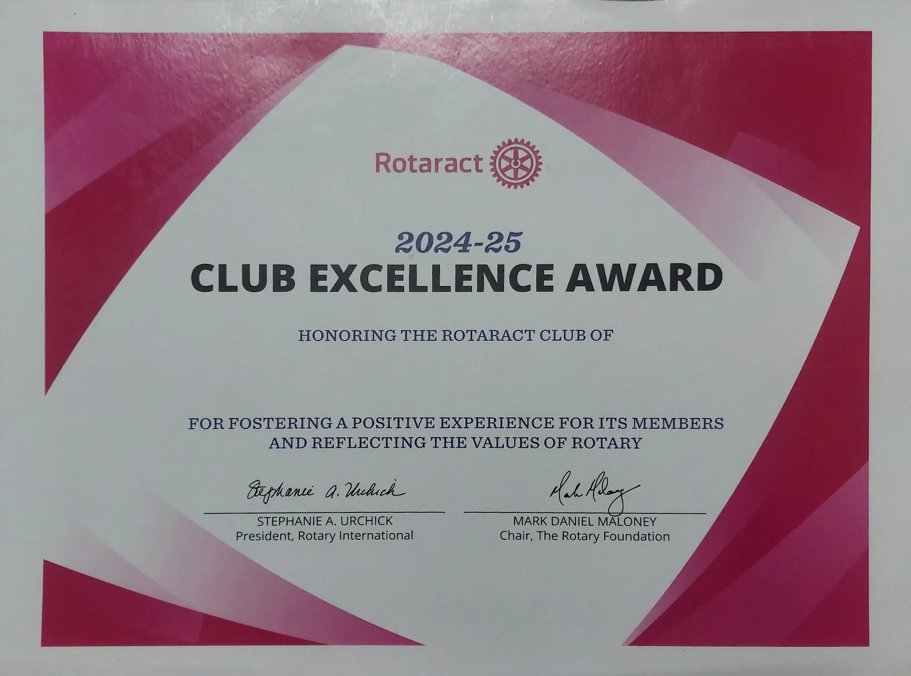

Club Excellence Award RY 2024–25 Flip for details
Club Excellence Award
“For fostering a positive experience for its members and reflecting the values of Rotary.”
Signed by the President of Rotary International and the Chair of The Rotary Foundation.
See all awards →